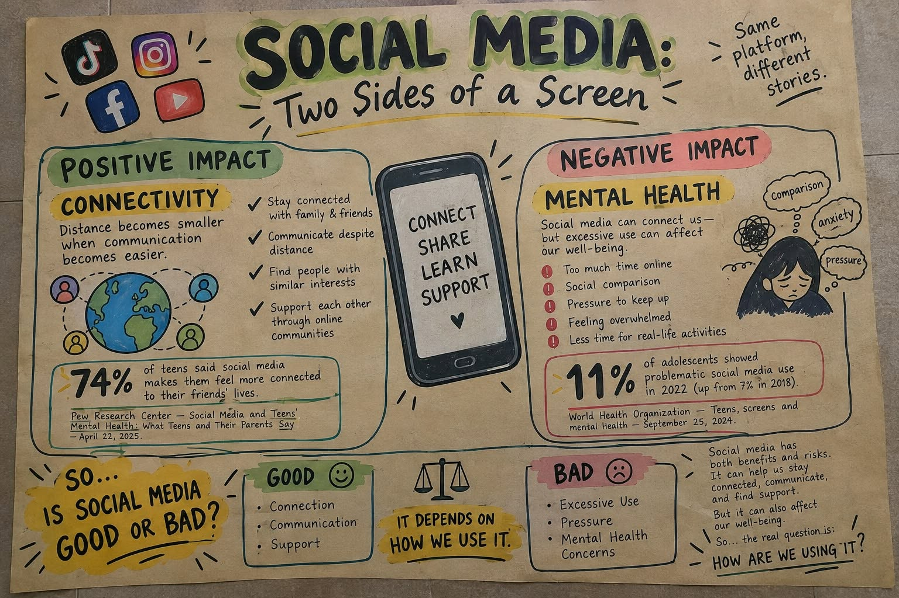

Learning Objectives
- Classify different types of social media and digital communication platforms.
- Analyze the impact of social media on personal relationships, society, and culture.
- Identify tools and best practices for effective online collaboration.
- Evaluate the positive and negative effects of social media use.
10.1 Categories of Social Media and Digital Communication
"Social media" is a broad term covering many different types of platforms, each designed for different purposes and modes of interaction. Understanding these categories helps clarify why people use different platforms for different needs.
| Category | Description & Examples |
|---|---|
| Social Networking | Platforms designed to build and maintain personal or professional networks of connections. Examples: Facebook (personal connections, community groups), LinkedIn (professional networking, job searching). |
| Microblogging | Platforms for short, frequent public posts, often used for real-time updates, news, and public discourse. Examples: Twitter/X, Threads. |
| Media Sharing | Platforms centered on sharing photos, videos, and other media content. Examples: Instagram (photos/short videos), YouTube (long-form video), TikTok (short-form video). |
| Messaging / VoIP | (Voice over Internet Protocol) Platforms for direct or group communication via text, voice, or video calls. Examples: Facebook Messenger, WhatsApp, Viber, Zoom, Google Meet. |
| Discussion Forums | Platforms organized around topic-based community discussions, often allowing more in-depth, threaded conversations. Examples: Reddit, Quora. |
| Collaboration Platforms | Tools designed for shared work, document co-creation, and team coordination. Examples: Google Workspace (Docs, Sheets, Slides), Microsoft Teams, Slack. |
10.2 Impact of Social Media on Society
Positive Impacts
- Connectivity — enables people to stay connected with friends and family across geographic distances.
- Information Access — provides rapid access to news, educational content, and diverse perspectives.
- Community Building — allows like-minded individuals to find and support each other (support groups, hobby communities, advocacy groups).
- Economic Opportunities — enables small businesses and individual creators to reach audiences and generate income (social commerce, content creation).
- Civic Engagement — facilitates organizing for social causes, awareness campaigns, and civic participation.
Negative Impacts and Concerns
- Mental Health Effects — research has linked excessive social media use to increased anxiety, depression, and lowered self-esteem, particularly related to social comparison.
- Misinformation Spread — false information can spread rapidly, sometimes faster than fact-checking can keep up (discussed further in Week 19).
- Privacy Concerns — personal information shared on social media can be collected, sold, or misused (discussed further in Week 12).
- Cyberbullying and Online Harassment — anonymity and distance can embolden harmful behavior.
- Reduced Face-to-Face Interaction — excessive screen time may reduce in-person social skills and relationships, particularly among younger users.
- Filter Bubbles and Echo Chambers — algorithms that show users content similar to what they already engage with can reinforce existing beliefs and reduce exposure to diverse viewpoints.
10.3 Online Collaboration: Tools and Best Practices
Beyond social interaction, digital communication tools have transformed how people work together — whether for school group projects, remote work, or community organizing.
| Tool Type | Description & Examples |
|---|---|
| Cloud Document Collaboration | Tools like Google Docs allow multiple users to edit the same document simultaneously, see each other's changes in real time, and maintain a version history. |
| Project Management Tools | Platforms like Trello, Asana, or Notion help teams organize tasks, set deadlines, and track progress on collaborative projects. |
| Video Conferencing | Tools like Zoom, Google Meet, and Microsoft Teams enable face-to-face meetings regardless of physical location, supporting remote group work and virtual classes. |
| Shared Cloud Storage | Services like Google Drive, OneDrive, and Dropbox allow teams to store and access shared files from any device. |
| Communication Channels | Platforms like Slack or Discord organize team communication into channels by topic, reducing email clutter and enabling quick, organized discussions. |
Best Practices for Online Collaboration
- Establish clear communication norms (response times, preferred channels) at the start of a group project.
- Use shared documents and project management tools to maintain transparency about who is responsible for what.
- Be mindful of "digital body language" — written messages can be misread without tone of voice or facial expressions; be clear and considerate.
- Respect others' time — schedule meetings considerately and keep them focused and time-limited.
- Maintain version control — avoid creating multiple conflicting copies of the same document.
Interactive Infographic Report
Hover over or touch the image below to magnify and read the details clearly.
